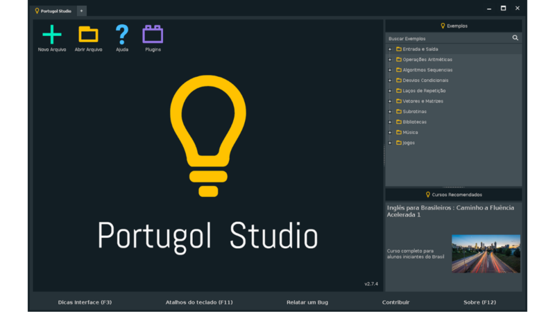

O que são fluxogramas?
Fluxogramas mostram processos de forma visual, como um mapa dos passos de um algoritmo. Usamos eles para planejar e explicar lógica de programação.
Simbologia básica
- Oval: início ou fim
- Retângulo: ação ou processo
- Losango: decisão
- Paralelogramo: entrada de informacoes
O que são algoritmos?
Algoritmos são passos organizados para resolver problemas. Aparecem em programação, matemática, computação e tarefas automatizadas.
O que é o Portugol?
Portugol é uma linguagem simples em português para aprender lógica de programação. Imita linguagens reais, mas usa português estruturado.
O que é o Portugol Studio?
Portugol Studio é um programa gratuito para escrever e rodar algoritmos em Portugol. Tem editor de texto, compilador e ferramentas para depurar.
Variáveis e constantes
Variáveis guardam valores que mudam durante o programa. Constantes são valores fixos que não alteram.
Tipos de dados em Portugol
- Booleano: verdadeiro ou falso
- Caracter: um único caractere
- Cadeia: sequência de caracteres
- Inteiro: números sem casas decimais
- Real: números com casas decimais
- Vetor: grupo de elementos iguais
Exemplos de programas em Portugol com funções
Exemplo 1: Saudação
programa {
funcao inicio() {
escreva("Olá, mundo!")
}
}Exemplo 2: Soma
programa {
funcao inicio() {
inteiro a = 5, b = 3
escreva("Soma: ", a + b)
}
}Exemplo 3: Condicional
programa {
funcao inicio() {
inteiro numero = 10
se (numero > 5) {
escreva("Maior que 5")
} senao {
escreva("Menor ou igual a 5")
}
}
}Exemplos de programas em Portugol com vetores
Exemplo 1: Vetor de números
programa {
funcao inicio() {
inteiro vetor[5] = {1, 2, 3, 4, 5}
para (inteiro i = 0; i < 5; i++) {
escreva(vetor[i], " ")
}
}
}Exemplo 2: Vetor de strings
programa {
funcao inicio() {
cadeia nomes[3] = {"João", "Maria", "José"}
para (inteiro i = 0; i < 3; i++) {
escreva(nomes[i], "\n")
}
}
}Exemplo 3: Soma de vetor
programa {
funcao inicio() {
inteiro vetor[4] = {10, 20, 30, 40}
inteiro soma = 0
para (inteiro i = 0; i < 4; i++) {
soma = soma + vetor[i]
}
escreva("Soma: ", soma)
}
}